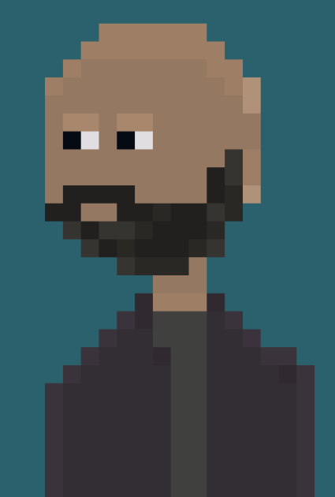

Preparing the Development Environment: Clean Installation of Fedora
September 21, 2024
Before diving into game development, the first step is preparing the desktop environment. I've chosen Fedora. This choice is based on several factors:
- It's a mainstream distribution with extensive community support, which facilitates problem-solving.
- It offers a good balance between stability and innovation.
- I have previous experience with Fedora and feel comfortable with it.
- My hardware is highly compatible with this distribution.
To start with a clean installation, I've developed two scripts that facilitate the process of backing up and reinstalling my applications. Here's the first script, which when executed generates a list of the applications installed by the user:
#!/bin/bash
# Name of the file where applications will be saved
OUTPUT_FILE="applications.txt"
# Function to get user-installed applications via DNF
get_dnf_apps() {
echo "User installed applications (DNF):" > "$OUTPUT_FILE"
dnf repoquery --userinstalled --queryformat '%{NAME}' | sort | uniq >> "$OUTPUT_FILE"
}
# Function to get Flatpak installed applications
get_flatpak_apps() {
echo -e "\nFlatpak installed applications:" >> "$OUTPUT_FILE"
flatpak list --app --columns=application | sort >> "$OUTPUT_FILE"
}
# Execute functions to get the list of applications
get_dnf_apps
get_flatpak_apps
echo "The list of user-installed applications has been saved in $OUTPUT_FILE"
After getting the list of applications, I proceed to format and perform a clean installation of Fedora. Once the system is installed and updated, I copy the file generated by the first script into my $HOME directory and run the second script to reinstall all the applications on the list:
#!/bin/bash
# Name of the file containing the list of applications
INPUT_FILE="applications.txt"
# Function to install DNF applications
install_dnf() {
echo "Installing DNF applications..."
APPS_DNF=$(sed -n '/DNF:/,/Flatpak:/p' "$INPUT_FILE" |
grep -v "DNF:" | grep -v "Flatpak:" | tr '\n' ' ')
if [ -n "$APPS_DNF" ]; then
sudo dnf install -y $APPS_DNF
else
echo "No DNF applications found to install."
fi
}
# Function to install Flatpak applications
install_flatpak() {
echo "Installing Flatpak applications..."
APPS_FLATPAK=$(sed -n '/Flatpak:/,$ p' "$INPUT_FILE" |
grep -v "Flatpak:" | tr '\n' ' ')
if [ -n "$APPS_FLATPAK" ]; then
for app in $APPS_FLATPAK; do
flatpak install -y flathub $app
done
else
echo "No Flatpak applications found to install."
fi
}
# Check if the input file exists
if [ ! -f "$INPUT_FILE" ]; then
echo "The file $INPUT_FILE does not exist. Please run the application listing script first."
exit 1
fi
# Execute the installation functions
install_dnf
install_flatpak
echo "Application installation has finished."
I hope this information is useful for those who wish to perform a similar process of reinstalling applications to get the system ready to start using it right away.
The beginning of an adventure: Creating a 2D Point & Click graphic adventure
September 12, 2024
Today marks the beginning of an exciting personal adventure: creating my own game. As someone with no prior experience in programming or digital art, this project represents an enormous challenge and, at the same time, the realization of a long-postponed dream.
Over the past few weeks, I've been working on the heart of the project: the story. The classic LucasArts graphic adventures have always been an inspiration, and now I aim to create an interactive narrative in the purest style of the classic adventures from the 90s, which will be filled with intriguing puzzles and memorable characters.
The Tools That Will Help Me in This Adventure
As a long-time Linux enthusiast, it was crucial to find cross-platform tools that would allow me to design and create the game on this operating system. After much research, I decided on the following:
- The OS: Fedora 40
- Trello: To organize and manage project tasks. Being a web-based tool, it works perfectly on any platform.
- Aseprite: My choice for creating characters and backgrounds in pixel art, capturing the essence of classic adventures. Fortunately, it has a Linux version.
- Godot: The game engine I'll be using, chosen not only for its accessibility and open-source nature but also for its excellent cross-platform support, including Linux.
The choice of these cross-platform tools not only allows me to work comfortably in my Linux environment but also facilitates the eventual distribution of the game across multiple operating systems.
For now, my main focus is on learning. I'm immersed in courses and tutorials about these tools, while continuing to develop the story and puzzles that will bring this adventure to life. I'm aware that the road will be long and challenging, but I'm determined to persevere.
This blog will be a kind of development diary, a space where I'll share my progress, challenges, and learnings. There's no deadline for completing this project; my goal is to enjoy the process and, with a bit of luck, turn this dream into reality.
As I am constantly learning about the world of Linux and its distributions, I will post everything I consider relevant as a self-reminder. As you can see, memory is my weak point. Anyway...
Who knows? Maybe my experience will inspire others to dust off their own dreams.
Let the adventure begin!